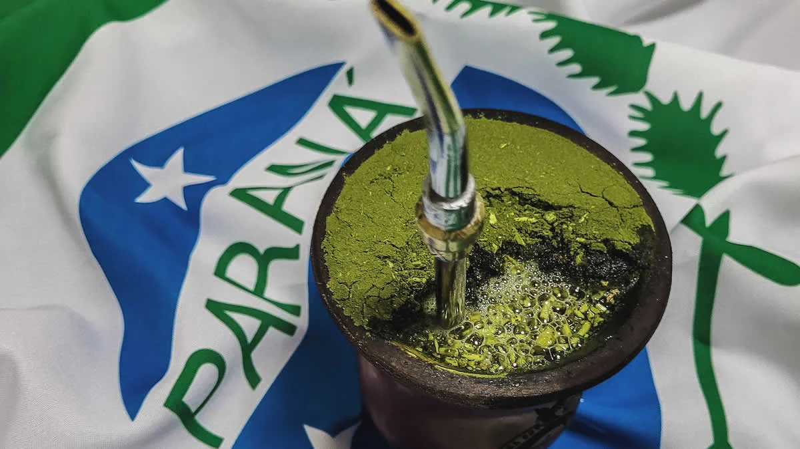

Erva-Mate
A história da erva-mate (Ilex paraguariensis) se confunde com a própria formação territorial e cultural do Paraná, atuando como o principal motor de desenvolvimento econômico e social do estado ao longo dos séculos.

Origens e Tradição Cultural
Origens e Tradição Cultural Muito antes da chegada dos colonizadores europeus, os povos indígenas Guarani e Kaingang já dominavam o uso da árvore nativa das florestas de araucária. Denominada por eles de caá-y, a planta era consumida em infusões não apenas como uma poderosa fonte de energia e vitalidade para longas caminhadas, mas também como elemento central de rituais sagrados e medicinais. No século XVI, com a chegada das missões jesuíticas, a técnica indígena de sapecar, secar e moer as folhas foi absorvida e aprimorada pelos colonizadores. O hábito ultrapassou as fronteiras tribais e se espalhou por toda a Bacia do Prata. Com o passar dos séculos, esse consumo ritualístico evoluiu para o chimarrão e o tereré, consolidando-se como o maior símbolo de sociabilidade, acolhimento e identidade do povo paranaense.

O Ciclo Econômico e a Transformação Urbana
Durante o século XIX, o Paraná viveu o auge do "Ciclo da Erva-Mate", período em que a exportação da planta representava até 85% da economia regional. A riqueza gerada pelo setor foi tão expressiva que garantiu a força política necessária para a emancipação da Província do Paraná em 1853, desmembrando-se de São Paulo. Para escoar a produção dos engenhos do interior até os portos de Antonina e Paranaguá, o governo e os produtores financiaram obras colossais de engenharia, como a consolidação da Estrada da Graciosa e a construção da impressionante Ferrovia Curitiba-Paranaguá. Esse fluxo constante de capital transformou a demografia e a infraestrutura do estado. Pequenos povoados evoluíram rapidamente para cidades dinâmicas, com destaque para Curitiba, Lapa, Ponta Grossa, Campo Largo e São Mateus do Sul. A elite econômica do período — os célebres "Barões do Mate" — reinvestiu suas fortunas na modernização urbana, patrocinando iluminação, redes de transporte e a construção dos imponentes palacetes neoclássicos que ainda ornamentam os centros históricos paranaenses. Como reflexo desse valor inestimável, nos séculos XVII e XVIII, a escassez de moedas metálicas fez com que a própria erva-mate fosse utilizada como moeda corrente oficial para pagar impostos e salários na região.

Curiosidades
Curiosidades 1
A Síria é o maior importador global de erva-mate fora da América do Sul. O hábito foi levado no início do século XX por imigrantes árabes que retornaram da Argentina e do Brasil, tornando o mate um item indispensável nas reuniões familiares do país. Dizer "obrigado" ao devolver a cuia indica que você já se satisfez e não beberá nas próximas rodadas. Além disso, jamais se deve mexer na bomba de metal, pois isso desestrutura a montagem interna da erva e entope o filtro.
Curiosidades 2
Na Copa do Mundo do Catar em 2022, as seleções da Argentina e do Uruguai despacharam quase uma tonelada de erva-mate em suas bagagens (cerca de 500 kg para os argentinos e 240 kg para os uruguaios) para garantir que a rotina e os rituais dos atletas não fossem interrompidos durante o torneio. O hábito se espalhou de tal forma pelo futebol internacional que hoje é comum ver astros europeus sem nenhuma raiz sul-americana — como o francês Antoine Griezmann e o inglês Eric Dier — chegando aos estádios carregando cuia e garrafa térmica, hábito que pegaram com companheiros de time da América do Sul.